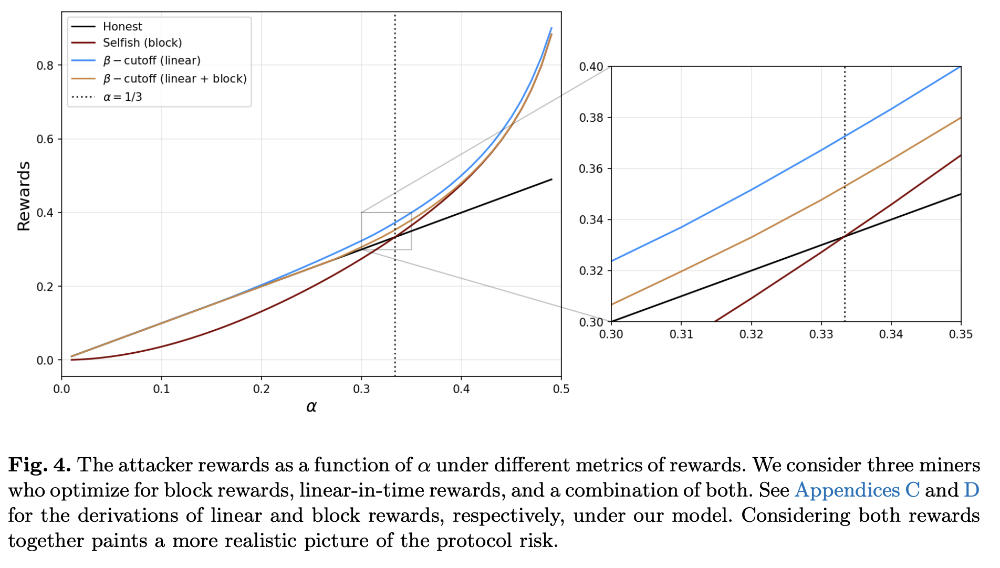
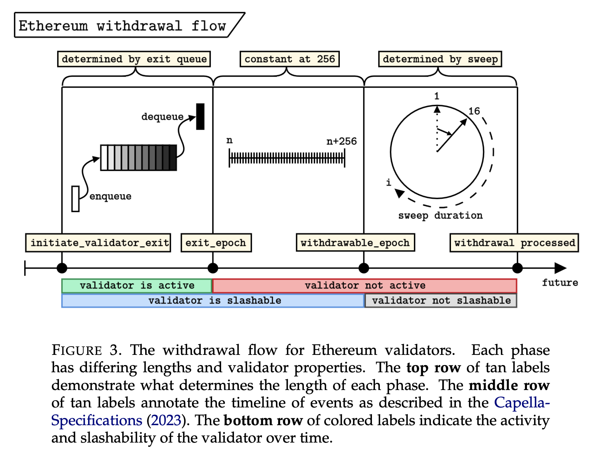

writing (papers)
by category:
- selfish mining
+ Selfish mining under general stochastic rewards
- consensus/proof-of-stake
+ Low-cost attacks on Ethereum 2.0 by sub-1/3 stakeholders
+ Defending Against Malicious Reorgs in Tezos Proof-of-Stake
+ Selfish Behavior in the Tezos Proof-of-Stake Protocol
+ Optimizing Exit Queues for Proof-of-Stake Blockchains: A Mechanism Design Approach
- misc.
Tullock Contests in the Wild: Applications in Blockchains
- defi
+ Strategic Liquidity Provision in Uniswap v3
- information theory
+ Detection of Local Mixing in Time-Series Data Using Permutation Entropy
+ An information-theoretic approach to extracting climate signals from deep polar ice cores
+ Anomaly Detection in Paleoclimate Records Using Permutation Entropy
==========================================================================================
by year:2025
→ Tullock Contests in the Wild: Applications in Blockchains
by Pranav Garimidi, Michael Neuder, Tim Roughgarden
https://www.sigecom.org/exchanges/volume_23/1/GARIMIDI.pdf
------------------------------------------------------------------------------------------
→ Selfish mining under general stochastic rewards
by Maryam Bahrani, Michael Neuder, S. Matthew Weinberg
https://arxiv.org/pdf/2502.20360
------------------------------------------------------------------------------------------
2024
→ Optimizing Exit Queues for Proof-of-Stake Blockchains: A Mechanism Design Approach
by Michael Neuder, Mallesh Pai, and Max Resnick
https://arxiv.org/pdf/2406.05124
------------------------------------------------------------------------------------------
2021

→ Strategic Liquidity Provision in Uniswap v3
by Michael Neuder, Daniel Moroz, Rithvik Rao, and David C. Parkes
https://arxiv.org/pdf/2106.12033
------------------------------------------------------------------------------------------

→ Detection of Local Mixing in Time-Series Data Using Permutation Entropy
by Michael Neuder, Elizabeth Bradley, Edward Dlugokencky, James W. C. White and Joshua Garland
https://arxiv.org/pdf/2010.12384
==========================================================================================
2020

→ Low-cost attacks on Ethereum 2.0 by sub-1/3 stakeholders
by Michael Neuder, Daniel Moroz, Rithvik Rao, and David C. Parkes
https://arxiv.org/pdf/2102.02247
------------------------------------------------------------------------------------------

→ Defending Against Malicious Reorgs in Tezos Proof-of-Stake
by Michael Neuder, Daniel Moroz, Rithvik Rao, and David C. Parkes
https://arxiv.org/pdf/2009.05413
==========================================================================================
2019

→ Selfish Behavior in the Tezos Proof-of-Stake Protocol
by Michael Neuder, Daniel Moroz, Rithvik Rao, and David C. Parkes
https://arxiv.org/pdf/1912.02954
------------------------------------------------------------------------------------------

→ An information-theoretic approach to extracting climate signals from deep polar ice cores
by Joshua Garland, Tyler R. Jones, Michael Neuder, James W. C. White, and Elizabeth Bradley
https://aip.scitation.org/doi/pdf/10.1063/1.5127211
==========================================================================================
2018

→ Anomaly Detection in Paleoclimate Records Using Permutation Entropy
Joshua Garland, Tyler R. Jones, Michael Neuder, Valarie Morris, James W. C. White, and Elizabeth Bradley
https://www.mdpi.com/1099-4300/20/12/931
------------------------------------------------------------------------------------------